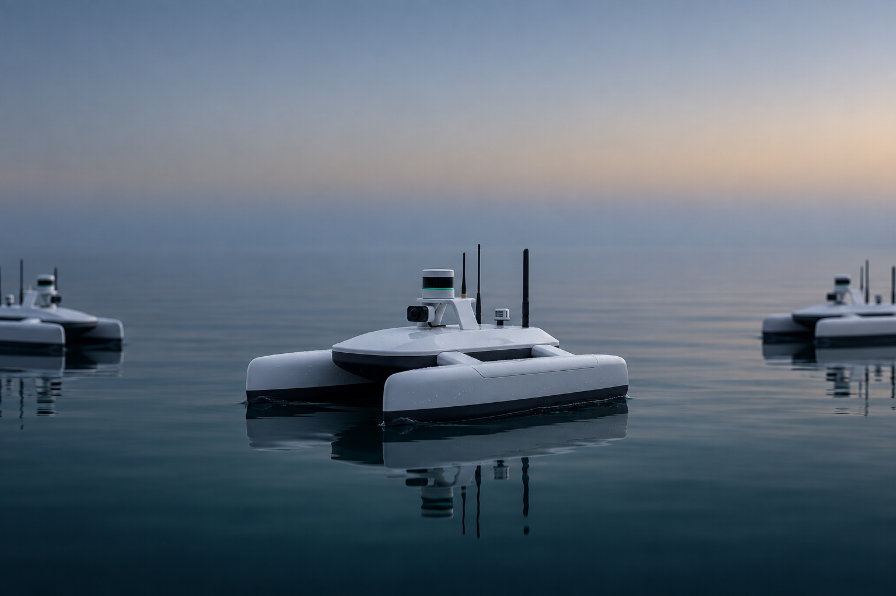
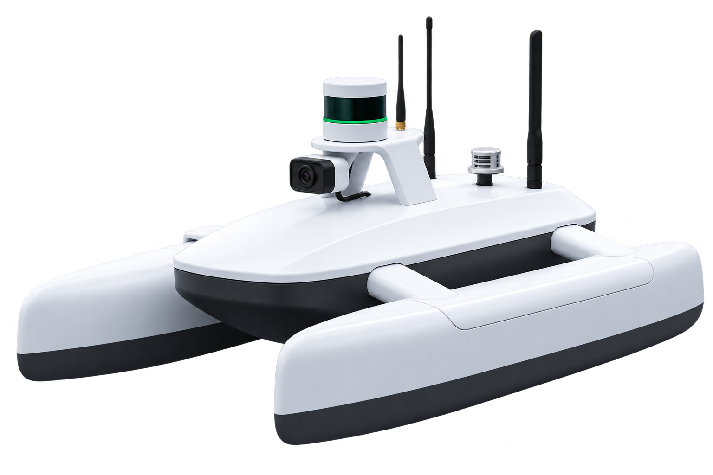

План до выхода на воду
Точки и порядок обхода задаются оператором.

Вода даёт сигналы.
Мы учимся их читать.
 Обследование акватории
Обследование акваторииТочки и порядок обхода задаются оператором.
Каждое измерение связано с местом и временем.
Один маршрут для сопоставления наблюдений.
Испытания на воде запланированы на октябрь 2026 года.

Разрабатываем сервис для тех, кто отвечает
за состояние водоёмов.
Водоёмы-накопители, пруды-отстойники, водохранилища-охладители и выпуски сточных вод предприятий I категории.
Обсудить ваш объектБезэкипажный катамаран для обследования водоёмов.
Измерения по маршруту и отбор проб
на одной платформе.

SuBulaq USV / Концепция в разработкеКатамаран для маршрутов по водоёмам.
Датчики, навигация и отбор проб
на одной платформе.
Заданный маршрут и привязка каждого наблюдения к координатам и времени.
Компоновка и характеристики будут уточнены по результатам испытаний. Изображение показывает концепцию, а не готовый серийный аппарат.
Маршрут, измерения и состояние аппарата — рядом. Переключайте разделы, чтобы изучить демонстрацию.
Пример измерений без оценки соответствия нормативам.
| Точка | pH | Мутность, NTU | Температура, °C | TDS, мг/л |
|---|
Значения придуманы для демонстрации интерфейса. Это не результаты обследования.

Четыре точки маршрута, время и четыре показателя воды. Скачайте учебный набор измерений в формате CSV.
Скачать пример CSVДемонстрационный файл. Не является лабораторным протоколом.
Демонстрация возможностей платформы. Связь с аппаратом и полевые данные появятся после испытаний прототипа.
SuBulaq разрабатывается для полевой части обследования. Лабораторный анализ остаётся отдельным этапом.
| Задача | Ручной отбор | Стационарный пост | SuBulaq — концепция |
|---|---|---|---|
| Наблюдение | Точки выезда | Место установки | Точки на маршруте |
| Отбор проб | Выездная бригада | Зависит от оснащения | Картриджи на борту |
| Лабораторный анализ | В лаборатории | По методике измерений | В партнёрской лаборатории |
Предлагаем обсудить формат обследования. Аппарат, оператор, расходные материалы, доставка проб и отчёт планируются в составе услуги.
Для знакомства с объектом и проверки выбранного маршрута.
ОбсудитьПовторные проходы по согласованному графику в сезон открытой воды.
ОбсудитьРегулярные наблюдения и отбор проб с учётом задач экологической службы.
ОбсудитьСтоимость рассчитаем после согласования маршрута, перечня анализов и условий работы лаборатории. Сейчас собираем запросы на пилот.
Три студента Cardiff University Kazakhstan. Объединяем проектирование, робототехнику и программное обеспечение.
Капитан команды
Партнёрства и презентация
Конструкция аппарата
Исследования и разработка
Программное обеспечение
Компьютерное зрение
По состоянию на сентябрь 2026 года команда готовит прототип. Испытания на воде запланированы на октябрь 2026 года. Мобильное приложение и веб-платформа работают на демонстрационных данных.
Бортовые датчики предназначены для предварительного скрининга. Они помогают выбрать точки для отбора проб. Официальный анализ и лабораторный протокол выполняет аккредитованная лаборатория.
Мы разрабатываем сервис обследования. Аппарат, оператор, картриджи, доставка проб и отчёт планируются в составе услуги. Условия пилота согласовываются отдельно для каждого объекта.
В базовой концепции предусмотрены pH, мутность, температура и TDS с координатами и временем. Состав лабораторных анализов определяется задачами заказчика.
Расскажите команде о водоёме, точках отбора и задачах экологической службы. Вместе обсудим доступ на объект, маршрут, лабораторную часть и критерии оценки пилота.
Расскажите о водоёме. Обсудим маршрут.
Подготовим план пилота.